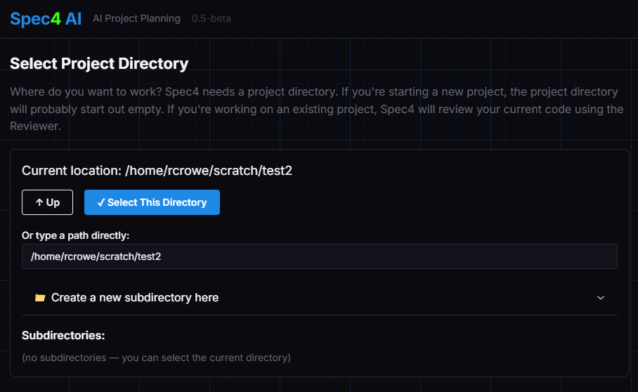

Understand where you're starting from.
If you're building something new from scratch, you can skip straight to Brainstormer. But if you're extending or redesigning an existing project, Reviewer reads your codebase and produces a structured analysis before any planning begins.
It walks through six areas — project type, architecture, languages and frameworks, build system, coding style, and notable observations — and asks you to confirm or correct each one. The result travels with the spec through every downstream agent.
code_review JSON object

Turn a rough idea into a well-defined vision.
Brainstormer is a collaborative agent that asks you one focused question at a time. It surfaces assumptions, identifies gaps, and pushes back when something is unclear — without overwhelming you with a form to fill out.
Each answer adds to a running vision statement you can review and revise at any step. Brainstormer deliberately stays in its lane: it won't ask about technology, hosting, or libraries. The focus is entirely on what you're building, who it's for, and why it matters.
vision_statement JSON object

Pick a technology stack with confidence.
StackAdvisor takes your vision statement and walks you through every layer of the technology decision: programming language, deployment platforms, hosting approach, libraries for each functional area, and coding style.
For each choice, it presents ranked options with honest trade-off analysis — maintenance status, adoption, footprint, what you'd have to write yourself without it. When a code review is present, it actively flags conflicts between what you have and what you're considering.
stack_spec JSON object

A plan your coding agent can actually execute.
Phaser takes the vision and stack spec and produces a numbered sequence of implementation phases. Each phase is a self-contained JSON object with a summary, dependency list, configuration requirements, step-by-step instructions, a risk assessment, and an exact verification command.
Phase 1 is always a Steel Thread — the minimal end-to-end connection that proves your stack is wired together before any feature development begins. If a phase would require a dependency not in your stack spec, Phaser stops and asks for your approval first.
phase JSON objects